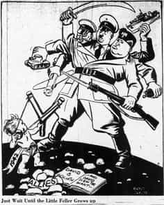

< < < Back
The Deeper Implications Of Ben Moynihan’s Violent Beta Male Rampage – Return Of Kings
On March 6, 2015, 18 year old Ben Moynihan, a UK native, was found guilty of the attempted murder of three women (after he attempted to stab a 20, 45, and 67-year-old with a kitchen knife) and sentenced to 21 years in prison. His reason for attacking them? He was a 17-year-old virgin who couldn’t get laid.
During the trial, various letters Moynihan had written came to light, each one laden with quips such as “when women won’t talk to you, it’s heartbreaking, why are they fussy with men nowadays,” and “I think every girl is a type of slut…they do not give boys like us a chance.”
Sound familiar?

Hell, even the profile photos are so similar it’s scary. Here you have two young men, divided by thousands of miles of land and sea, who have that same look of hopelessness, despair, and complete and total cluelessness common amongst the herbs and betas modern society’ is churning out by the truckloads.
Moynihan’s sentencing comes a little over a month or two after Wilkes McDermid, a London-based food blogger, jumped from a building to his death. McDermid, who was Asian, explained the reasons for his untimely demise thusly:
The reason for my death is simple. I have concluded that in the realm of dating and relationships the primary characteristics required for men are as follows: Height: above 5 ft. 10; Race: huge bias towards Caucasian and black; Wealth: or other manifestation of power.
Feminists would take that statement and say something like, “yeah, Moynihan and McDermid didn’t understand that this isn’t ancient times…in today’s world, nobody’s owed a woman just because they’re ‘nice’.” Feminist websites are already trying to declare Moynihan the poster-child of misogyny.
The average red-piller, on the other hand, would say, “yeah, it’s a shame that those guys just didn’t understand that in today’s world, without game, you’re just lost…they could’ve had soft harems in three different cities if they’d just lifted some weights and boned up on their asshole game.”
While I definitely reject the feminists’ spin on these tragedies, I only partly subscribe to my red-pill brethren’s interpretation of these events. I’ve noticed that while Roosh touched on McDermid’s death in his forum, very few people in the manosphere have talked about Moynihan. In a way, that’s a good thing, because if all we’re going to do is just shake our heads and say, “he should’ve learned game,” all we’ve successfully done is kick the can down the road.
We’ve all got the blood of kings coursing through our veins, gentlemen. That means we’ve got the wherewithal to delve deeper into this issue.
Who Betas Think They’re Fighting
The main problem people like McDermid, Moynihan, and even Rodger had was that, in attempting to assign blame for their respective predicaments, they kept missing the target.
McDermid seemed to believe that some abstract, faceless, voiceless force in the cosmos had conspired against him to elevate tall black and white men above him in the sexual marketplace. Moynihan and Rodger seemed to believe that a bunch of slick-haired, Jersey-Shoresque “alphas” decked in white t-shirts and covered in tattoos were somehow robbing them of the prize, and blamed the women who were attracted to them for being thusly attracted.
The true nature of female attraction and women’s evolutionary hard-wiring have been covered ad nauseam in previous posts, so I won’t go into that here. As for the guys, well, a perfect example of the typical discussions that take place between game denialists and practitioners of game can be seen here.
You see, it’s easy to blame pickup artists, women, and the cosmos when you strike out. It takes in-depth thought to stop, do some self-introspection, and realize that maybe you shouldn’t be trying to talk to that purple-haired girl with fortune cookie sayings stenciled into her back.

Yep, she’s a keeper, all right!
Who Betas Are Really Fighting
I don’t think it’s a coincidence that we’ve seen quite a bit of postings about the UK on this site over the last few weeks. First, there’s “Yes Means Yes” in London. Then we hear about how churches are advising women to “blue ball English men” until they marry them. These are all articles that address different facets of what men from the early days of the manosphere colloquially called “The Cathedral.”
The guys who coined these phrases were spot-on. The only mistake that a lot of us keep making is failing to see the method behind the madness. To put it bluntly, this issue goes far beyond women just wanting to have their way. What you’ve actually got is an alliance akin to the Axis Powers, composed of feminists, the LGBT, and social anarchists in general.

All of this accomplishes three things. First of all, it shrinks the pool of legitimately dateable women down to about the size of a teacup. Secondly, it puts a helluva price tag on otherwise mediocre pussy. Thirdly, it creates a divide between men and women that a) makes “alternative” lifestyles seem more “normal” based on the illusion that all straight relationships are either doomed to failure or dead on arrival, and b) creates a “window of opportunity” in the minds of LGBTs in which to “convert” these newly spurned casualties of the dating wars.
The first same sex marriage was officiated in the UK in March 2014, and the phenomenon’s been picking up steam ever since; to speak counter to the so-called “marriage equality” (yeckkh) movement anywhere in the world nowadays is verboten. Meanwhile, you’ve got a country full of Lena Dunhams waddling up and down the streets of England shooting guys down as if they’re 9s and 10s, while the few actual 9s and 10s who are left are over in Dubai getting spit-roasted by Arabian oil tycoons.
It’s the perfect storm for an unwary, hapless guy to either settle for the hot girls’ overweight friends, “discover” that he was always unsuccessful with women because he was “gay all along,” or to check out of the sexual marketplace altogether.
Much like the Architect in the Matrix, the architects of this crap have done a cost-benefit analysis, and have concluded that for every Wilkes McDermid who ends it all and for every Elliott Rodger who flips out and kills someone, there are hundreds of thousands of beta lemmings who will unwittingly allow themselves to be herded about in the manner I previously described, all while being the perfect, productive worker-drones, wasting away in cubicles under toxic fluorescent lights for 50 hours a week. That, my friends, is the heart of the Matrix.
So You’ve Acquired The Right Target. Now What?

Once people know what they’re actually fighting against and what the true cause of their ills is, they tend to become productive. They stop basting in self-pity and regret, and start devoting more time to self-improvement in the hopes of striking back at “the system.”
You don’t tend to do that when your target is “that bitch who didn’t give me her phone number” or “that prick who doesn’t deserve to date that Victoria’s Secret model.” That’s just a recipe for withdrawal into oneself, seclusion, self-loathing, and, ultimately, self-destruction.
I’d bet my car title that that’s what happened to Ben Moynihan. He could’ve looked around, sized up the world around him, and made a conscious decision to become the boldest, fittest dude he knew how to be in order to not only carve himself out a niche in that world, but to ultimately work towards changing it. That’s how empires are built, and how broken systems are repaired.
I’ve heard people say that betas will never rise up and change the system because they’ve just become too blinded and too jaded to act. I don’t fully agree with that assessment. I think that once they get a dose of the Red Pill and get their sights readjusted on the true target, a change will come. Atlas Shrugged style. With a vengeance.
Read More: The Revolutionary Implications Of GamerGate


{kind=link}
{kind=link}
{kind=link}